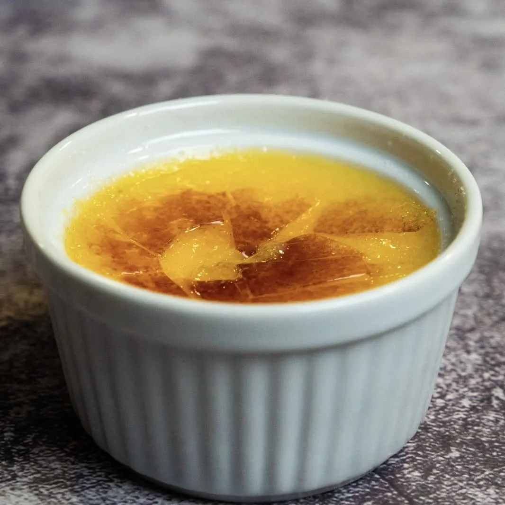

⏲ 25 minuts 👥 6 racions

Acabem mes i, com sempre, us portem una recepta dolça. Es tracta d’una crema de llimona deliciosa i
lleugerata del mític ‘Cuinar per ser feliç’ de la xef @carme.ruscalleda. Una recepta ideal per
refrescar-nos la fi d’un àpat, rematar qualsevol menjar sense haver de renunciar al dolç per por a
quedar embafats.
Ingredients:
- 4 llimones
- 4 ous
- 300g de sucre
- 50g de midó de blat de moro
- 1L d'aigua mineral
- En un bol, mesclem el sucre i el midó de blat de moro. Hi ratllem la pell de les 4 llimones, hi afegim els 4 ous i ho batem tot ben batut. Quan estigui homogeni, hi acabem d’integrar el suc de les 4 llimones.
- Afegim la mescla en una olla on tinguem el litre d’aigua, prèviament escalfat. Ho anem treballant amb les varetes a foc lent, fins que bulli lleugerament uns segons.
- Podem colar la crema perquè quedi més fineta, i després la repartim en bols o motlles que més ens agradin.
- Ho reservem a la nevera fins al moment de servir. Veureu que la crema és bastant líquida, però espessirà a mesura que agafi fred. Podem rematar el plat cremant una mica de sucre a sobre.